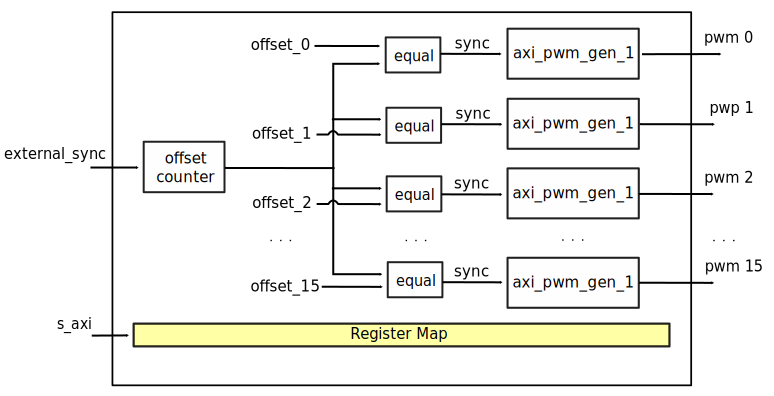
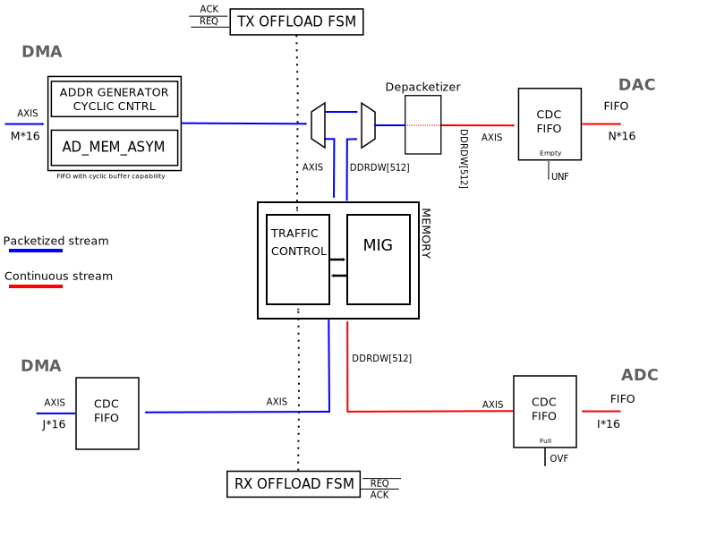

Data Offload
The Data Offload Engine is, in essence, a clock-domain crossing store-and-forward buffer (or FIFO) with some extra features useful in bursty RF applications. More specifically, it was designed to sit between the DMA and the DAC for the TX and between the ADC and the DMA for the RX path of a digital RF chain. This is reflected in the synthesis settings of the device, that also enable or disable certain other settings of features where appropriate. For example, in the receive path cyclic operation isn’t supported.
Features
Configurable storage unit with support for Block-RAM and External DRAM (Up to 16 GiB) or external High Bandwidth Memory (HBM)
Configurable interface width and rates
External timing synchronization for precisely timed buffers (For example, in combination with the Timing-Division Duplexing Controller)
Cyclic and oneshot store and forward operation
Bypass mode to completely bypass all features and act as a pure CDC FIFO
Many settings configurable at runtime via MM AXI4-Lite bus
Note
The data offload does NOT support, in its current state, continuous streaming except when in bypass mode (thus disabling all other functionality).
Utilization
Device Family |
LUTs |
FFs |
|---|---|---|
Xilinx Zynq UltraScale+ |
750 |
2000 |
Files
Name |
Description |
|---|---|
Verilog source for the peripheral. |
|
Linux Driver. |
|
arch/arm64/boot/dts/xilinx/zynqmp-zcu102-rev10-ad9081-m8-l4-do.dts |
Example device tree using the data offload. |
Block Diagram
Configuration Parameters
Name |
Description |
Default Value |
Choices/Range |
|---|---|---|---|
ID |
Instance identification number. |
0 |
|
MEM_TYPE |
Define the used storage type: 0: BlockRAM; 1: external DDR. |
0 |
Internal memory (0), External memory (1) |
MEM_SIZE_LOG2 |
Define the log2 size of the storage element in bytes. |
10 |
1kB (10), 2kB (11), 4kB (12), 8kB (13), 16kB (14), 32kB (15), 64kB (16), 128kB (17), 256kB (18), 512kB (19), 1MB (20), 2MB (21), 4MB (22), 8MB (23), 16MB (24), 32MB (25), 64MB (26), 128MB (27), 256MB (28), 512MB (29), 1GB (30), 2GB (31), 4GB (32), 8GB (33), 16GB (34) |
TX_OR_RXN_PATH |
If set TX path enabled, otherwise RX. |
0 |
RX path (0), TX path (1) |
SRC_DATA_WIDTH |
The data width of the source interface. |
64 |
|
DST_DATA_WIDTH |
The data width of the destination interface. |
128 |
|
DST_CYCLIC_EN |
Enables CYCLIC mode for destinations like DAC. |
True |
|
AUTO_BRINGUP |
If enabled the IP runs automatically after bootup. |
1 |
|
SYNC_EXT_ADD_INTERNAL_CDC |
If enabled the CDC circuitry for the external sync signal is added. |
True |
|
HAS_BYPASS |
If enabled the bypass circuitry is added. |
True |
Interface
Physical Port |
Logical Port |
Direction |
Dependency |
|---|---|---|---|
s_axi_awaddr |
AWADDR |
in [15:0] |
|
s_axi_awprot |
AWPROT |
in [2:0] |
|
s_axi_awvalid |
AWVALID |
in |
|
s_axi_awready |
AWREADY |
out |
|
s_axi_wdata |
WDATA |
in [31:0] |
|
s_axi_wstrb |
WSTRB |
in [3:0] |
|
s_axi_wvalid |
WVALID |
in |
|
s_axi_wready |
WREADY |
out |
|
s_axi_bresp |
BRESP |
out [1:0] |
|
s_axi_bvalid |
BVALID |
out |
|
s_axi_bready |
BREADY |
in |
|
s_axi_araddr |
ARADDR |
in [15:0] |
|
s_axi_arprot |
ARPROT |
in [2:0] |
|
s_axi_arvalid |
ARVALID |
in |
|
s_axi_arready |
ARREADY |
out |
|
s_axi_rdata |
RDATA |
out [31:0] |
|
s_axi_rresp |
RRESP |
out [1:0] |
|
s_axi_rvalid |
RVALID |
out |
|
s_axi_rready |
RREADY |
in |
Physical Port |
Logical Port |
Direction |
Dependency |
|---|---|---|---|
s_axi_aclk |
CLK |
in |
Physical Port |
Logical Port |
Direction |
Dependency |
|---|---|---|---|
s_axi_aresetn |
RST |
in |
Physical Port |
Logical Port |
Direction |
Dependency |
|---|---|---|---|
m_axis_ready |
TREADY |
in |
|
m_axis_valid |
TVALID |
out |
|
m_axis_data |
TDATA |
out [127:0] |
|
m_axis_last |
TLAST |
out |
|
m_axis_tkeep |
TKEEP |
out [15:0] |
Physical Port |
Logical Port |
Direction |
Dependency |
|---|---|---|---|
s_axis_ready |
TREADY |
out |
|
s_axis_valid |
TVALID |
in |
|
s_axis_data |
TDATA |
in [63:0] |
|
s_axis_last |
TLAST |
in |
|
s_axis_tkeep |
TKEEP |
in [7:0] |
Physical Port |
Logical Port |
Direction |
Dependency |
|---|---|---|---|
wr_request_enable |
request_enable |
out |
|
wr_request_valid |
request_valid |
out |
|
wr_request_ready |
request_ready |
in |
|
wr_request_length |
request_length |
out [9:0] |
|
wr_response_measured_length |
response_measured_length |
in [9:0] |
|
wr_response_eot |
response_eot |
in |
|
wr_overflow |
status_overflow |
in |
Physical Port |
Logical Port |
Direction |
Dependency |
|---|---|---|---|
rd_request_enable |
request_enable |
out |
|
rd_request_valid |
request_valid |
out |
|
rd_request_ready |
request_ready |
in |
|
rd_request_length |
request_length |
out [9:0] |
|
rd_response_eot |
response_eot |
in |
|
rd_underflow |
status_underflow |
in |
Physical Port |
Logical Port |
Direction |
Dependency |
|---|---|---|---|
s_storage_axis_ready |
TREADY |
out |
|
s_storage_axis_valid |
TVALID |
in |
|
s_storage_axis_data |
TDATA |
in [127:0] |
|
s_storage_axis_tkeep |
TKEEP |
in [15:0] |
|
s_storage_axis_last |
TLAST |
in |
Physical Port |
Logical Port |
Direction |
Dependency |
|---|---|---|---|
m_storage_axis_ready |
TREADY |
in |
|
m_storage_axis_valid |
TVALID |
out |
|
m_storage_axis_data |
TDATA |
out [63:0] |
|
m_storage_axis_tkeep |
TKEEP |
out [7:0] |
|
m_storage_axis_last |
TLAST |
out |
Physical Port |
Direction |
Dependency |
Description |
|---|---|---|---|
s_axis_aclk |
in |
Source Domain Clock Signal Input. Bus |
|
s_axis_aresetn |
in |
Bus |
|
m_axis_aclk |
in |
Destination Domain Clock Signal Input. Bus |
|
m_axis_aresetn |
in |
Bus |
|
init_req |
in |
Indicator that the signal source (e.g. DMA) intends to provide new data soon. |
|
sync_ext |
in |
External synchronization signal, with or without internal clock-domain crossing logic. Can be used to couple certain state machine transitions to external processes. |
|
ddr_calib_done |
in |
MEM_TYPE == 1 |
Allows the user to read back status information about the DDR calibration status from software. |
Register Map
DWORD |
BYTE |
Reg Name |
Description |
|||
|---|---|---|---|---|---|---|
BITS |
Field Name |
Type |
Default Value |
Description |
||
0x0 |
0x0 |
VERSION |
Version of the peripheral. Follows semantic versioning. Current version 1.00.61. |
|||
[31:16] |
VERSION_MAJOR |
RO |
0x0001 |
|||
[15:8] |
VERSION_MINOR |
RO |
0x00 |
|||
[7:0] |
VERSION_PATCH |
RO |
0x61 |
|||
0x1 |
0x4 |
PERIPHERAL_ID |
||||
[31:0] |
PERIPHERAL_ID |
RO |
ID |
Value of the ID configuration parameter. |
||
0x2 |
0x8 |
SCRATCH |
||||
[31:0] |
SCRATCH |
RW |
0x00000000 |
Scratch register useful for debug. |
||
0x3 |
0xc |
IDENTIFICATION |
||||
[31:0] |
IDENTIFICATION |
RO |
0x44414f46 |
Peripheral identification (‘D’, ‘A’, ‘O’, ‘F’). |
||
0x4 |
0x10 |
SYNTHESIS_CONFIG_1 |
||||
[2] |
HAS_BYPASS |
RO |
HAS_BYPASS |
If set the bypass logic is implemented. |
||
[1] |
TX_OR_RXN_PATH |
RO |
TX_OR_RXN_PATH |
If this device was configured for the TX path, this bit will be set to 1. Conversely, the bit will be 0 for the RX path. |
||
[0] |
MEMORY_TYPE |
RO |
MEM_TYPE |
This bit identifies the type of memory that was chosen during synthesis. A value of 1 identifies external memory, while a value of zero indicates that block ram was used. |
||
0x5 |
0x14 |
SYNTHESIS_CONFIG_2 |
||||
[31:0] |
MEM_SIZE_LSB |
RO |
MEM_SIZE_LSB |
32 bits (LSB) of the storage unit size.
|
||
0x6 |
0x18 |
SYNTHESIS_CONFIG_3 |
||||
[1:0] |
MEM_SIZE_MSB |
RO |
MEM_SIZE_MSB |
2 bits (MSB) of the storage unit size.
|
||
0x7 |
0x1c |
TRANSFER_LENGTH |
||||
[31:0] |
TRANSFER_LENGTH |
RW |
TRANSFER_LENGTH |
The transfer length register can be used to override the transfer length in RX mode in increments of 64 bytes.
|
||
0x20 |
0x80 |
MEM_PHY_STATE |
||||
[5] |
UNDERFLOW |
RW1C |
0x0 |
Indicates that storage could not handle data rate during play. Available when core is in TX mode. |
||
[4] |
OVERFLOW |
RW1C |
0x0 |
Indicates that storage could not handle data rate during capture. Available when core is in RX mode. |
||
[0] |
CALIB_COMPLETE |
RO |
0x0 |
Indicates that the memory initialization and calibration have completed successfully. |
||
0x21 |
0x84 |
RESET_OFFLOAD |
||||
[0] |
RESETN |
RW |
AUTO_BRINGUP |
“Software Reset”: Resets all the internal address registers and state machines. |
||
0x22 |
0x88 |
CONTROL |
||||
[1] |
ONESHOT_EN |
RW |
ONESHOT_EN |
Enables oneshot mode. This means that the data offload will only play a received buffer once,
and then stop. This mode is useful when you want to use the data offload for its synchronization
features, but don’t need the repeating output.
|
||
[0] |
OFFLOAD_BYPASS |
RW |
0x0 |
Enables bypass mode. In this mode pretty much all functionality of the data offload is bypassed, and the data offload will simply act as an asynchronous dual-port FIFO and forward your data stream. |
||
0x40 |
0x100 |
SYNC_TRIGGER |
||||
[0] |
SYNC_TRIGGER |
RW1C |
0x0 |
Software trigger for software sync mode. |
||
0x41 |
0x104 |
SYNC_CONFIG |
||||
[1:0] |
SYNC_CONFIG |
RW |
0x0 |
Synchronization mode: 0: Auto, 1: Hardware trigger, 2: Software trigger, 3: Reserved. |
||
0x80 |
0x200 |
FSM_BDG |
||||
[11:8] |
FSM_STATE_READ |
RO |
It force the Rx side offload state machine into the required state. |
|||
[4:0] |
FSM_STATE_WRITE |
RO |
The current state of the offload state machine. |
|||
Access Type |
Name |
Description |
|---|---|---|
RO |
Read-only |
Reads will return the current register value. Writes have no effect. |
RW |
Read-write |
Reads will return the current register value. Writes will change the current register value. |
RW1C |
Read,write-1-to-clear |
Reads will return the current register value. Writing the register will clear those bits of the register which were set to 1 in the value written. Bits are set by hardware. |
Detailed Description
General Use Cases
Note
This IP will always have a storage unit (internal or external to the FPGA) and is designed to handle high data rates. If your data paths will run in a lower data rate, and your intention is just to transfer the data to another clock domain or to adjust the bus width of the data path, you may want to check out the util_axis_fifo or util_axis_fifo_asym IPs.
The initialization and data transfer looks as follows:
in case of DAC, the DMA initializes the storage unit, after that the controller will push the data to the DAC interface in one-shot or cyclic way.
in case of ADC, the DMA requests a transfer, the controller saves the data into the storage unit, after that it will push it to the DMA.
BYPASS mode: simple streaming FIFO in case of clock rate or data width differences between source and sink interfaces (data rate MUST match in order to work); the BYPASS mode is used when an initially high rate path is downgraded to lower rates.
Generic Architecture
The main role of our data paths is to stream data from point A to point B in a particular system. There are always a SOURCE and a DESTINATION point, which can be a device (ADC or DAC), a DMA (for system memory) or any other data processing IP.
In the context of Data Offload IP, we don’t need to know who is the source and who is the destination. Both interfaces are AXI4 Stream interfaces, which can be supported in both Xilinx’s an Intel’s architecture, and can be connected to any device core or DMA.
The storage unit is connected to the Data Offload controller via two AXIS interfaces. This way the same controller can be used for various storage solutions. (BRAM, URAM, external memory etc.)
Interfaces and Signals
Register Map Configuration Interface
AXI4 Lite Memory Mapped Subordinate (S_AXI4_LITE)
This interface is used to access the register map.
// interface clock -- system clock -- 100 MHz
input s_axi_aclk
// interface resetn -- synchronous reset active low
input s_axi_aresetn
/* write address channel */
// validates the address on the bus
input s_axi_awvalid
// write address
input [15:0] s_axi_awaddr
// protection type -- not used in the core
input [ 2:0] s_axi_awprot
// write ready, indicates that the subordinate can accept the address
output s_axi_awready
/* write data channel */
// validate the data on the bus
input s_axi_wvalid
// write data
input [31:0] s_axi_wdata
// write strobe, indicates which byte lanes to update
input [ 3:0] s_axi_wstrb
// write ready, indicates that the subordinate can accept the data
output s_axi_wready
/* write response channel */
// validates the write response of the subordinate
output s_axi_bvalid
// write response, indicates the status of the transfer
output [ 1:0] s_axi_bresp
// response ready, indicates that the manager can accept the data
input s_axi_bready
/* read address channel */
// validates the address on the bus
input s_axi_arvalid
// read address
input [15:0] s_axi_araddr
// protection type -- not used in the core
input [ 2:0] s_axi_arprot
// read ready, indicates that the subordinate can accept the address
output s_axi_arready
/* read data channel */
// validates the data on the bus
output s_axi_rvalid
// read response, indicates the status of the transfer
output [ 1:0] s_axi_rresp
// read data driven by the subordinate
output [31:0] s_axi_rdata
// read ready, indicates that the manager can accept the data
input s_axi_rready
Supported Data Interfaces
AXI4 Stream Interface (S_AXIS | M_AXIS)
The AXI Stream Subordinate (S_AXIS) interface is used to receive AXI stream from the transmit DMA or ADC device.
The AXI Stream Manager (M_AXIS) interface is used to transmit AXI stream to receive DMA or DAC device.
// NOTE: this reference is a manager interface
// interface clock -- can be device/core clock or DMA clock
input m_axis_aclk
// interface resetn -- synchronous reset with the system clock
input m_axis_resetn
// indicates that the subordinate can accept a transfer in the current cycle (in case of an ADC core, this will control the stream)
input m_axis_ready
// indicates that the manager is driving a valid transfer
output m_axis_valid
// primary payload
output [DATA_WIDTH-1:0] m_axis_data
// indicates the boundary of a packet
output m_axis_last
// byte qualifier, we need this so we can have different DMA and device data widths
output [(DATA_WIDTH/8)-1:0] m_axis_tkeep
Note
A packet will always be a full buffer. All the data beats are going to be full beats (all the bytes of the bus are valid), except for the last one. axis_last and axis_tkeep will be used to indicate a partial last beat. This information should be transferred from the source domain to the sink domain, so we can read back the data from memory correctly.
AXIS Source and Destination Interface to the Storage Unit
This is a blocking (back-pressure) interface for the storage unit, with similar behavior of main AXIS data interfaces.
Initialization Request Interface
Defines a simple request interface to initialize the memory:
The request will come from the system and will put the data offload FSM into a standby/ready state.
Synchronization Modes
AUTOMATIC
ADC: The IP will start to fill up the buffer with samples as soon as possible.
DAC: As the DMA will send a valid last, the FSM will start to send the stored data to the device.
HARDWARE
ADC and DAC: An external signal will trigger the write or read into or from the memory.
SOFTWARE
The software writes a RW1C register which will trigger the reads or writes into or from the memory.
Note
In case of DAC, if the DMA does not send all the data into the buffer, before a hardware sync event, then the unsent data will be ignored. It’s the user/software responsibility to sync up these events accordingly.
Clock Tree
In general there are at least two different clocks in the data offload module:
DMA or system clock : on this clock will run all the front end interfaces
Memory Controller user clock : user interface clock of the DDRx controller (optional)
Device clock : the digital interface clock of the converter

A general frequency relationship of the above clocks are:
CLKdma <= CLKddr <= CLKconverter
The clock domain crossing should be handled by the util_axis_fifo module.
All the back end paths (device side) are time critical. The module must read or write from or into the storage at the speed of the device.
DDR data rate >= Device data rate
DDR data rate >= ADC data rate + DAC data rate
Data Path

The data path should be designed to support any difference between the source, memory and sink data width.
The data width adjustments will be made by the CDC FIFO.
In both paths (ADC and DAC) the data stream at the front-end side is packetized, meaning there is a valid TLAST/TKEEP in the stream. While in the back-end side the stream is continuous (no TLAST/TKEEP).
The DAC path has to have a depacketizer to get rid of the last partial beat of the stream.
Because the ADC path already arrives in a packed form, and we always will fill up the whole storage, we don’t need to treat special use-cases.
Used Storage Elements
ZC706 |
ZCU102 |
A10SOC |
|
|---|---|---|---|
FPGA |
XC7Z045 FFG900 – 2 |
XCZU9EG-2FFVB1156 |
10AS066N3F40E2SG |
External Memory Type |
DDR3 SODIMM |
DDR4 |
DDR4 HILO |
External Memory Size |
1 GB |
512 MB |
2 GB |
Embedded Memory Type |
BRAM |
BRAM |
M20K |
Embedded Memory Size |
19.1 Mb |
32.1 Mb |
41 Mb |
Data Width Manipulation
Data width differences should be treated by the CDC FIFO.
The smallest granularity should be 8 bits. This constraint will mainly generate additional logic just in the TX path, taking the fact that the data from the ADC will come packed.
The main role of the gearbox is to improve the DDR’s bandwidth, stripping the padding bits of each samples, so the raw data could be stored into the memory.
Xilinx’s MIG vs. Intel’s EMIF
Incrementing burst support for 1 to 256 beats, the length of the burst should be defined by the internal controller.
Concurrent read/write access, the external memory to be shared between an ADC and DAC.
Dynamic burst length tuning: an FSM reads and writes dummy data until both ADC’s overflow and DAC’s underflow lines are de-asserted. Pre-requisites: both devices’ interfaces should be up and running.
Optional gearbox to congest the samples in order to increase the maximum data rate.
In general all samples are packed into 16 bits. This can add a significant overhead to the maximum real data rate on the memory interface. The gearbox’s main role is to pack and unpack the device’s samples into the required data width (in general 512 or 1024 bits).
Boards with FPGA side DDR3/4 SODIMMs/HILO: ZC706, ZCU102, A10SOC.
ZC706 |
ZCU102 |
A10SOC |
|
|---|---|---|---|
Max data throughputs (MT/s) |
1600 |
2400 |
2133 |
DDRx reference clocks |
200 MHz |
300 MHz |
133 MHz |
DDRx Data bus width |
64 |
16 |
64 |
Memory to FPGA clock ratio |
4:1 |
4:1 |
4:1 |
UI type & burst length |
AXI4-256 |
AXI4-256 |
Avalon Memory Map |
UI data width |
512 |
128 |
512 |
Internal Cyclic Buffer Support for the TX Path
On the front end side of the TX path, a special buffer will handle the data width up/down conversions and run in cyclic mode if the length of the data set is smaller than 4/8 AXI/Avalon bursts. This way, we can avoid to overload the memory interface with small bursts.
On the back end side, because the smallest granularity can be 8 bytes, we need a dynamic ‘depacketizer’ or re-aligner, which will filter out the invalid data bytes from the data stream (this module will use the tlast and tkeep signal of the AXI stream interface).
Control Path - Offload FSM


Linux Driver
The linux driver has two responsibilities:
Initializes the data offload on startup.
Integrates with cf_axi_dds to allow IIO to utilize the data offload for cyclic operation.
The former of those two is covered by the device tree, which implements five options:
adi,bringupwill automatically enable the data offload on startup. Note that this option isn’t always necessary, because the HDL itself may have been synthesized with auto-bringup.adi,oneshotconfigures the default mode of operation for TX data offloads. This will usually be overridden by the IIO buffer integration and thus doesn’t have an effect in most situations.adi,bypassenables bypass mode, i.e. disables all functionality and makes the data offload act like a small asynchronous FIFO.adi,sync-configdetermines how the synchronization mechanism should operate. More information about this value can be found in the register map.adi,transfer-lengthis useful for RX instances, where the size of the receive buffer can be reduced from the default (All available storage).
The latter is addressed by the integration into cf_axi_dds.c and cf_axi_dds_buffer_stream.c, which allow the drivers to control the oneshot functionality of the data offload based on what was requested with the current IIO buffer, assuming that bypass was disabled.
References
HDL IP core at library/data_offload